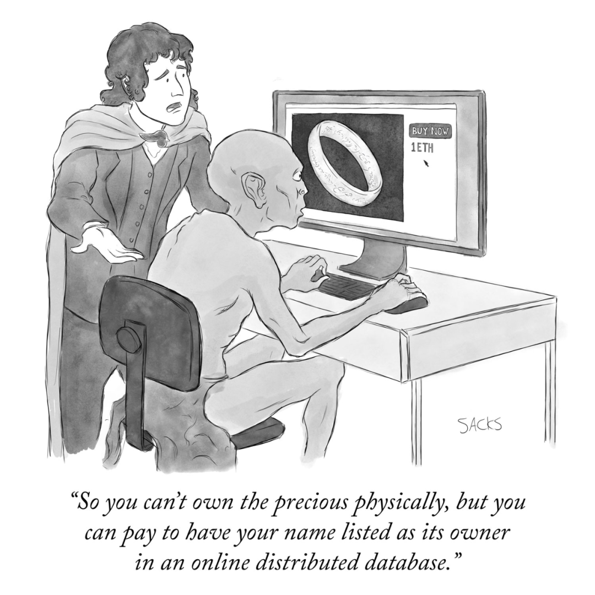

作者：Water & Music |
翻译：Wonder Chan |
校对：Shawn Wu & Sig |
排版：Dorothy |
当我们购买音乐 NFT 时，我们到底购买的是什么？购买了 NFT 就一定拥有了所有权，可以享受分成了吗？音乐 NFT 的所有权到底包含哪些权利？这篇文章从法律角度来解析了目前音乐 NFT 领域存在的版权问题以及解决方案，相信你看完之后一定有新的思考。
太长不看版
今年，音乐 NFT 领域充斥着各种天价销售的头条新闻......但销售出去的到底是什么呢？在注释完音乐 NFT 合同并向律师请教之后，我们发现关于「NFT 所有权到底是什么」的描述很少，甚至还有很多相互矛盾的观点，更不用说艺术家和平台根本无法兑现他们对买家的承诺。艺术家希望作品的使用协议是简单的，但全球音乐版权的生态系统是复杂的，这一基本矛盾造成了教育和沟通之间的鸿沟。
Water & Music 社区在过去两个月完成了《音乐和 Web3 领域现状》系列研究报告，报告一共包含五个部分，本文为第二部分。我们在文末列出了为我们研究音乐 NFT 法律问题提供线索的贡献者（按角色排序），以及在研究过程中注释的合同列表、音乐 / Web3 标准有关的参考资料。
本报告的第一部分研究了《生成性音乐 NFT 的新兴市场》，你可以通过访问我们的官网查看目前完成的所有报告，以及社区成员和贡献者的完整名单。
音乐 NFT 去年在一级市场的融资金额超过 8,000 万美元，推动了区块链音乐行业的空前发展和实验浪潮。音乐 NFT 的支持者对去中心化基础设施的优势大加赞赏，认为它可以消除根深蒂固的行业中间商，取代已经过时的唱片公司、圈内人士和其他利益相关者的职能。而且，去中心化基础设施让新一代的音乐家和创作者的大部分劳动成果可以被看到。
但是，在爆炸性的融资增长和炒作背后，人们对于「购买音乐 NFT 时真正购买的是什么」没有清晰的了解和认知。人们也不知道，在法律层面上，该技术是否真正「解决」了复杂的音乐版权所有权背后的基本争议。
尽管该领域已经历五年以上的开发和融资，爱好者和投资者也为区块链音乐行业解决方案贡献了数百页的白皮书内容，但一切还尚未起步。早在 2015 年，艺术家和开发者就一直试图用区块链来解决音乐行业最大的问题——晦涩的法律协议和复杂的版权法限制了创新的脚步，明确创作者归属的困境，版税的及时支付也遇到了困难（更何况可用版税的市场蛋糕也在逐渐缩小）。
早期，人们认为区块链将是音乐行业的 B2B 万能药，它可以提供一个去中心化账本，以更透明的方式记录音乐版权和所有权元数据，同时还有「智能合约」功能来实现版税的验证和自动化流转。在 2015 - 2018 年期间，许多初创公司和项目开始涌现，如 ConsenSys 旗下的 Ujo Music、JAAK、伯克利音乐学院 / 麻省理工学院联合成立的 Open Music Initiative，他们壮志雄心，希望为全球音乐业务建立去中心化的许可权和支付基础设施。
但事实证明，改变行业固有的权术规则、说服竞争对手开源版权数据库并非易事。这些项目愿景过大，在行业巨大压力下，他们逐渐崩溃。在最近 Water & Music 主持的推特空间中，HIFI Labs 加密主管、Ujo Music 前项目主管 Jack Spallone 提到：「我们试图与行业巨擘合作，推进其系统的现代化进程。但如果你认为这代表可以登记全球所有的音乐目录并通过自动化程序来获得许可，那就有点天真了。」
五年后的今天，区块链音乐行业的一些项目已经汲取了教训，尤其是 NFT 相关的项目。大多数围绕音乐 NFT 的变化不只是发生在微观层面上，不只是涉及单个艺术家和少数几个或者 100 个买家，也不仅仅是试图将几万或数百万的歌曲转移到链上；大家开始关注如何从 0 开始围绕音乐创建全新的经济模式，而不是仅仅是将传统的法律框架带入 Web3 轨道上。
基于这种新出现的范式，在关于如何将区块链大规模应用于音乐产业方面，目前有两种不同的理念：
将传统的音乐产业结构引入 Web3；
摒弃过往，创造全新的系统。
在这个二元选择中，选择了第一个就排除了另一个，反之亦然。但是，这两种理念需要大规模的统一采用才能产生真正的影响。因此，选择何种意识形态对在生态系统中的所有从业者来说是一个关键问题。那些在 Web3 领域的活跃者此刻应该做些什么？又有哪些法律问题应该注意？
在本文中，我们采访了几位律师，并对最近发布的音乐 NFT 项目完成了 40 多页的合同注释，以思考上述两种理念在当前形势下是如何发挥作用的（可以在文末的附录中查看注释合同的完整列表）。过去几年中，已经有很多关于音乐 NFT 法律问题的思辨或抽象辩论，我们希望通过更具体的合同为例对这个问题来进行探讨，这些合同都是现实世界中知名 NFT 项目中为收藏家和投资者提供的，他们重点探讨了现代音乐环境中仍然存在的主要法律漏洞和灰色地带，以及这些漏洞如何在短期内对艺术家和粉丝造成了或好或坏的实际影响。
免责声明：本文并非由律师撰写，文中内容只是为了传达一般信息，不提供任何法律建议或意见。本文内容不应作为任何特定情况下的法律意见倚赖，也不代表最新的法律发展。在法律允许的最大范围内，任何人不应依赖本文中的信息采取任何行动。对于任何人依据本文信息，采取行动或不采取行动的后果，Water & Music 不接受或承担任何责任。关于具体的法律问题，应联系律师寻求建议。

版权 101——当我们谈论「所有权」时，我们到底在谈论什么？
从法律角度看，所有权是一个简单的概念，它指的是个人对特定财产的特定权利，包括知识所有权和其他权利。但是，音乐的所有权并不能简单定义。
一般来说，知识产权是为了协调开放 IP 给社会带来的益处，以及激励发明者和创作者，这两者间的平衡，为创作者的作品提供最初排他对价权（法律术语，指双方之间通过金钱或商品等形式建立的利益关系），以促进社会的进步。
常见的知识产权类型包括商标、版权、专利和商业机密，当然还有很多其它类型。在涉及到公众人物时，姓名权、肖像权和公开权有时会被放在一起讨论。虽然对近期的一些 NFT 项目来说，商标权和公开权也相当重要；但就本文来看，了解版权的基本知识可能是最有帮助的。
版权是一种排他性的权利，它赋予了版权所有者复制和传播创作性作品专属权利。音乐之所以可以成为一种独特的版权，原因是在每一个录音作品中包含多种版权：音乐的基础词曲权（例如乐谱）；录音作品权（即基础音乐作品的具体录音版本）；公开表演权（公开表演某作品或播放某录音的特定版本的权利）。
因此，在不同情况可能需要不同和 / 或多个许可，包括：1）播放录音，2）复制歌曲，3）传播或广播歌曲，4）与任何视觉内容定时组合播放歌曲（例如在 Netflix 节目中使用的歌曲），通常是由拥有不同类别版权的实体提供。
音乐版权的所有权有一段复杂的历史：Michael Jackson 买下披头士乐队的版权和随之而来的不断纷争，Taylor Swift 试图从前唱片公司和投资者手中夺回她的录音作品控制权；一位普利策获奖记者以钓鱼的方式成为了数百首作品的词曲作者。大多数音乐版权的重大换手都遭遇了某种程度的争议，这也说明了「多方争夺单一作品中的多种版权」这一制度的缺陷。
NFT 是否能从本质上修复这些缺陷？虽然这项技术会给艺术家带来一定好处，虽然区块链确实有助于建立更透明的归属机制（假设输入的数据是准确的），但该技术本身并没有「解决」音乐产业中所有权复杂性的问题。
Reed Smith LLP 的合伙人 Sophie Goossens 对这个问题发表了看法：NFT 是替代所有权的一种形式，即通过合约建立的所有权。在数字文件中不存在合法的财产，因此也不存在数字财产的合法所有权，但双方仍然认可这种形式的所有权。
所以，Goossens 认为 NFT 是知识产权的第三层概念——替代的数字所有权，而之前是有形物品和与之相关的知识产权。这种结构看起来像这样：
创作者拥有知识产权。
物理世界的购买者拥有实体物品。
区块链上的 NFT 所有者拥有的是由合约创建的替代所有权。
这幅被《纽约客》拒绝的漫画精确描述了这种结构（《指环王》的粉丝希望索伦仍然拥有作品的知识产权，尽管已经被卖给了佛罗多）。

虽然不能拥有这些珍贵的实体，但可以花钱将自己的名字作为所有者记录在分布式数据库中。
虽然 NFT 为所有权新增了一层含义，但记录在区块链上的作品并不能改变原始作品的所有权。这种改变仍然需要在「物理世界」中得到法律上的验证。尤其是当购买一个音乐 NFT 伴随着相关知识产权的归属，和 / 或与所述知识产权相关的未来版税时，这一点尤其真实。优化合同条款，为普通歌迷免去了繁琐的法律条文，3LAU、Lil Pump、Lyrah、Vérité、Jacques Greene 和 Daniel Allan 等音乐家已经尝试将流媒体版税的收入分成作为他们销售和众筹的 NFT 的主要「效用」。
然而，分析了权利转让或版税分享 NFT 的附属基本协议的「细则」之后，我们发现，音乐版权的法律所有权和区块链记录的所有权之间存在很大差距。
在我们分析的所有音乐 NFT 合同里，关于「NFT 所有权到底是什么」的描述很少，甚至还有很多相互矛盾的观点，特别是将虚拟的数字财产所有权与「物理世界」的知识产权所有权相混淆。如果只是一次性实验，这样的错误也是情有可原的；但如果音乐行业想大规模采用区块链基础设施，这些概念混淆可能会产生重大的负面影响。

问题 1：事情并不是想象中那么简单
在许多现代音乐 NFT 的合同中，艺术家希望利用区块链技术来简化流程，特别是如何更恰当地考虑作品的原创作者利益，或更透明地在多个利益相关者之间分配版税收入。但是，当与律师谈及如何践行这一流程时，是以知识产权所有权和支配权的准确描述为代价的。通常来说，简化流程的确是一个目标，但在音乐产业环境下，尤其是当艺术家想在多个媒介上高水准地表演某个特定音乐作品时，简化的合同可能会存在很大的问题。
以 Lyrah 的 NFT 作品「Taken」合同为例，它是在 CreateOS 平台的帮助下生成的：
绿框中的第一句话写着：「拥有此 NFT 后，你可以得到此母带 25% 的所有权，这也意味着你可以获得这首歌在 Spotify 和 Apple Music 等流媒体平台版税收入的 25% 。」 但这句话是错误的！
如果你拥有一首母带的 25%，不等于你拥有 25% 的流媒体版税；如上图所示，这首歌有不同的版权所有者，他们都可以分得版税。这是一个相当明显的错误，并突显了一个问题：这些简单的协议需要各方之间的信任。相比拥有不同出版商和单独影音同步协议、签约了大公司的艺术家；对新兴艺术家来说，他们的版权还没有分散在不同的实体之间，在小经营规模下，艺术家和歌迷之间的信任是可控的，版税流程也要简单得多。
这样的例子比比皆是，艺术家公开（有意或无意地）将不同类型的音乐所有权或版权混为一谈。2021 年初，Jacques Greene 出售了一个 NFT，其中包括相关曲目的出版权（即基础作品的版权）。然而，这并不是真正的所有权转让，这只是一种可以分享版税的权利，其条款是 Jacques Greene 和 NFT 购买者在链下商定的。
同样，Eugy 在 Serenade 上架的 NFT 作品「Your Touch」允许买家在 Eugy 已发布歌曲《My Touch》的 Remix 版中录制一段主歌。当「My Touch」的全平台播放量达到 1500 万之后，NFT 所有者可以获得 Remix 版本的流媒体版税收入的 25%。但是，Eugy NFT 相关的购买条款明确表示，这些权利并不代表真正转让了物理世界的知识产权所有权。
关于歌曲所涉及的不同类型版权，甚至许多音乐 NFT 平台本身就缺乏基础知识的科普。例如，Republic / Lil Pump NFT 发行活动的登录页面中，面向投资者的声明被简单的一句话带过：「您将获得母带产生的潜在利润的分成」，页面开始展示其他内容，如下图所示：
Water&Music 社区成员 Jonathan Larr 也为这次发行的合同进行了注释，并发现了「令人担忧的」问题：这些合同中的许多还产生了词曲版税，而不仅仅是母带版税。他提到：「交互式流媒体产生了录音版税和词曲版税。下载歌曲会产生发行版税，而发行版税归属于词曲版税。影音同步协议是同时支付给母带版税和 / 或词曲版税，这取决于所使用的内容。我从一开始就担心，这些平台对术语的使用是不正确的。」
同样，当涉及到单个 1 / 1 NFT 和 / 或独立艺术家时，这些细微差别可能没有那么重要。但是，想象一下，如果有 1,000 多人购买了同一首歌曲的版税份额、如果这些歌曲 NFT 有多个作者、如果大厂牌的艺术家（实际上这些厂牌拥有母带的独家所有权）试图创建他们自己的音乐 NFT、如果代表了这些版税份额的 NFT 在二级市场上出售、如果艺术家（如泰勒·斯威夫特）录制了母带的更新版本，应该怎么办？更何况各个国家的版权法和「所有权」概念都不相同。
此外，如果一位艺术家侵权了一位艺术家的作品而被起诉，作为 NFT 所有者的你是否也要承担 25% 的损失呢？如果你购买了 NFT，认为自己「拥有」了它，你会满足于仅仅只获得版税吗？也许你想拥有创作衍生作品、重新混音或自己控制作品的权利？
具体到 Republic / Lil Pump 这个例子：作为 NFT 投资者，你认为自己没有获得应得的版税份额，所以你想起诉艺术家，但如果最初提供的信息就是不准确的，法院甚至无法确定 Republic / Lil Pump 应该得到何种版税。如果法院无法确定他们可以获得哪些版权使用费（例如，是否真的应该涉及母带和词曲版税），那么，在最好的情况下，会对合同起草人的意图提起复杂诉讼；法院可以很容易地决定他们是否有权获得两种版税。
......可以看到，这一切迅速变得复杂起来。显然，尽管区块链上的智能合约具有我们所描述的各种好处，但仍然无法与复杂的全球音乐版权生态系统相媲美。
值得注意的是，在这些情况下，NFT 创作者和 NFT 购买者 / 投资者之间的关系和传统的唱片公司与音乐家之间的关系类似。但并不是要否定这种类似性，因为投资艺术家肯定有助于促进他们的事业发展。也许解决方案不一定是要改变创作者在 NFT 销售中附带的权利，而是要确保购买者清楚地了解他们购买的是什么权利，以及他们究竟如何从这些权利中受益。

问题 2：缺乏金融监管和问责机制
智能合约指的是在某些预先确定的条件得到满足时自动执行的交易协议，或者可以简单理解为一组 if-then 函数，即以数字方式在公共和去中心化的账本上建立与 NFT 相关的人造产权。然而，如上所述，这种所有权并不能在物理世界中自动执行，至少在音乐产业，这些合同实际上都不是「智能」的。
那么，是什么保证了如今诸多音乐 NFT 发行中所有承诺的可靠性？尤其是如何保证所有权或投资带来的好处？在信任关系之外，我们如何才能确保艺术家兑现这些承诺（即确保他们的 NFT 发行不会成为骗局）？
MODA DAO 社区研发了一款帮助艺术家保留对音乐的完全控制权的 Web3工具，其增长主管 Dan Tauhore 在采访中告诉我们：「我们需要跟踪艺术家与粉丝的互动情况，追踪他们是否真的给予了奖励。」
换句话说，NFT 是否实现了数字或实体利益，将成为衡量艺术家 NFT 发行是否成功的关键指标。
在传统合同中，通常一方要向另一方交付一些产品或给予一些回报；但是，我们注释的大多数合同，连最基本的信息都出乎意料地少。
例如，关于大规模版权投资 NFT 的所有者如何能切实公平地获得其收入份额，大多数合同几乎没有这些机制的细节；
例如，使用哪种加密货币或稳定币支付，多长时间支付一次，是否将回报空投到收藏者的钱包而不是通过链接领取，谁将承担这些交易的 gas 费用等等。
这有可能是因为整个过程难以解释清楚，并且 / 或者目前还没有工具可以拥有丝滑流畅的付款体验；但这些仍然是非常重要的细节，不应该被掩盖。
版权法不完全适用于区块链相关技术，也无法通过数字文件就明确权利。创始人、律师和监管机构都提出了许多问题，即 NFT，或者广义上的「通证」，是否应被归类为证券。
1946 年最高法院案件中的「豪威测试」就是法院用于确定事物是否符合「投资合同」的条件并因此受证券法约束的标准。
目前尚未确定该测试是否或如何适用于区块链相关的应用，因此创作者应始终根据其具体行为事实寻求法律顾问。分别有两个问题：
通证具体包含哪些权利？是所有权还是其他权利的转让？
通证是否作为依赖第三方的努力获得收益的一种投资，被宣传或者营销？
近期的音乐 NFT 发行会不会为给出这些问题的答案呢？让我们看看作曲家 Junkie XL 于 2021 年 6 月在 AmplifyX 上发行的 NFT。
NFT 拍卖的「赢家」将与 Junkie XL 一起创作他们人生中的原声音乐，Junkie XL 将根据 NFT 所有者的意见创作 20 分钟的配乐。虽然 AmplifyX motto 明确指出，买家（或他们术语中的「赢家」）对艺术家进行了「投资」，但与 NFT 相关的真正合同条款谈到了许可权，并且不包含所有权的转让。
虽然合同条款的第七条明确表示：如果中标价超过 25 万美元，所有权存在转让的可能，但即使如此，中标者对作品能做的和不能做的事情，就像买方对商品（比如一张 DVD）的权利一样。
尽管这是一个 NFT（数字商品）所有权的案例，但拥有的只是「赢家人生中的原声音乐」这一作品的许可权。合同使用的术语存在问题，在豪威测试的框架下，真正的 NFT 可能不应被归类于证券。
另一方面，Opulous 与 Republic 共同创建的 S-NFT 看上去则是一款特定的投资工具。他们的公告（划重点）写着：
NFT 作为证券工具，为艺术家创造了新的机遇；证券 NFT 旨在提高效率，直接分配投资者的版税份额到他们的加密钱包中。
然而，当我们看到第一份 S-NFT 协议的真正内容时，即与说唱歌手 Lil Pump 合作之前的版本，我们发现了以下内容（划重点）：
本次发行和证券都没有按照联邦或州证券法进行登记，即没有适用于本公司的特定监管政策。
Opulous 是否应该向 SEC 申请注册 S-NFT？与其他加密货币面临的监管问题一样，人们缺乏共识。
一般来说，SEC 的作用是通过对证券的监管来保护投资者；所以 Goossens 和其他律师认为，重要的不是某样东西是否在区块链上出售；而是该物品，即潜在的证券，是否是一种可替代的、被动的金融资产。
根据定义，NFT 是不可替代的，尽管其他类型的通证和协议（如社交通证）是可替代的。
虽然目前没有现存法律可以借鉴，但监管机构似乎不可避免地会在某个时候介入。至于是在五年后还是十年后，完全取决于 NFT 的发展速度，当然也取决于相关的私人诉讼数量是否会增加。
由于普遍缺乏关于音乐版权使用费分配流程的教育，在很多情况下，散户投资者完全脱离了他们所购买版权的经济现实。
以 3LAU 在 Royal 发行的《Worst Case》的合同 为例，在该合同中，艺术家免费向收藏家分配 333 份点播流媒体版税的「买进份额」，这意味着每个份额最终只能获得这首歌曲在流媒体市场蛋糕中区区的 0.15%。
然而，这 333 个 NFT 中的大多数现在 OpenSea 的地板价为 3.25 ETH（截至本文发布时，约为 14,000 美元）。仅仅是「最糟糕情况」下的版税费用就能使其达到 3.25 ETH 的价格，成为值得投资的商品，那么流媒体的下载数量得是个天文数字；所以 NFT 被认为是短期投机资产而不是长期生产性资产。
能够立即在二级市场上转售含有版税的 NFT 是否会使散户投资者面临风险？如果艺术家在随后的销售中保留权益（版税），这也是 NFT 的销售惯例，也会带来额外的担忧。
相比之下，Republic 和 Lil Pump 的发行的「S-NFT」，直接表示他们符合美国证券交易委员会的第 144 条规定。该规定是对 SEC 常规申报要求的豁免，通常用于种子资金和雇员 / 管理人员的股票福利。不过，根据这一要求，投资者需要持有 S-NFT 至少 12 个月，但在加密货币时代 12 个月可能相当于好几年。
已经出现几个关于 NFT 销售的知识产权所有权的诉讼案例了。Roc-A-Fella 唱片公司认为，Damon Dash 为 Jay Z 的 Reasonable Doubt 发行 NFT 时，他无权出售他不拥有的东西。在他们的法庭文件中，该公司表示，虽然 Dash 拥有该公司三分之一的股份，但这并不意味着他可以出售公司资产。
NFT 也许只是一个数字项目，但当 NFT 涉及版权转让时，就与物理世界的法律边界发生了直接的碰撞。
同样，当昆汀·塔伦蒂诺（Quentin Tarantino）为自己的《低俗小说》电影剧本制作 NFT 时，Miramax（美国电影公司）介入并提起诉讼。问题不在于 NFT 本身，而在于昆汀拥有的与电影有关的权利是否延伸到了 NFT 这种新技术；问题的本质在于权利的利用，在昆汀铸造《低俗小说》NFT 这一情况，就立即与 Miramax 拥有的产品产生了纠纷。
在音乐知识产权方面，由于即使是一首歌曲也有众多的版权种类和版权持有人，这种权利利用的不确定性只会加剧，即使没有 Web3 也可以将这种不确定性暴露出来。这些早期的「凯达试验」是冰山一角，监管机构将采用或调整法律，以解决物理世界政策下新的所有权形式。
结论：我们应该怎样改进合同
目前在音乐和 Web3 领域主要集中在为艺术家和他们的粉丝提供小规模的解决方案，这只需要简单的文档来帮助人们浏览新的支持和互动模式。如果一个艺术家能够通过 NFT 销售赚到足够的钱养活自己和自己的艺术作品，那就是一场胜利。
然而，音乐 IP 的复杂结构并没有为简单的解决方案提供框架。艺术家所渴望的简单性与他们的艺术所处的复杂结构之间的这种紧张关系，使我们在现代音乐 NFT 领域发现了两个危险现象：
简单的语言替代了 NFT 合同本应包含的对权利的准确及全面的描述。
在这些合同中，对于 NFT 何时是一种投机工具，何时是一种营销工具，明显缺乏具体说明。
那么，我们今天可以对音乐 NFT 合同做出哪些切实的改进呢？
首先，是关于教育和沟通方面的。许多艺术家和粉丝，都没有意识到版权的复杂性。音乐人和创作者需要对他们所承诺的内容以及他们计划如何兑现承诺持开放态度。而歌迷需要明白，通过 NFT 投资他们喜欢的艺术家，可能不会带来任何潜在的好处，而且，尽管有一些夸张的通稿暗示好处，但这里确实没有简单的暴富计划。
除了沟通，还需要建立明确的机制，允许粉丝让音乐人和创作者对其 NFT 中包含的效用负责。这需要明确定义什么是效用，以及如何领取这些效用。如果它包括任何形式的未来收入，我们需要再次进行明确的沟通——关于收入的确切来源，是被动收入，还是包括 NFT 内部购买者的积极参与，以及当这些未来收入的权利再次转手时会发生什么。
基于区块链的解决方案可以使上述所有问题看起来很简单，因为当触发 NFT 中包含的任何效用时，可以通过 if-then 结构来解决，但问题本质还是在所有权归属以及对所有权的认可。于是，Web3 音乐遭遇了一个不可避免的障碍。
一方面，的确存在风险偏好较高、热衷于尝试和交易新兴技术和商业模式的人。比如之前提到的 MODA DAO，该组织在上个月推出了他们的通证，当时他们甚至连开发目标都还未明确。
另一方面，有一些人希望将整个传统音乐产业转移到区块链上，并热衷于为 Web3 的应用建立广泛的标准。但问题是，由于买卖音乐 NFT 的新用例不断地出现，很难想象这些标准会是什么。曾参与过 The Song that Owns Itself 的音乐 / Web3 领域的资深人士 George Howard 在接受采访时告诉我们：「总得先有交易才有标准......是什么给了这些人勇气，自诩洞悉了消费者搜索和使用资产的方式，并且还是在一个全新的维度上？」
在由谁来承担制定标准的责任方面，存在着一些差异。例如，MODA 或 Royal 在音乐 NFT 领域的责任与单个独立艺术家在 NFT 发行中的责任肯定不同。
然而，他们都希望从 NFT 包含的额外的替代所有权中获益，我们看到它一次又一次地与物理世界的所有权相混淆。所以，我们应该推动替代所有权的正式权利，作为潜在创作者和 NFT 所有者的收入来源。为了使音乐 / Web3 体验长期运作，我们需要建立这个新的所有权层，作为未来音乐业务法律结构的核心部分。
贡献者
Cherie Hu (A, B, D)Maarten Walraven (A, B, D)Yung Spielburg (A, B, C)Levi Downey (B, C)Jonathan Larr (B, C)Jillian Jones (B)Brandon Landowski (B)Brodie Conley (C)Joshua Glazer (D)Dan Smith (E)Ana Carolina Laurindo (F)Jack Spallone (G)
(A) Research project leads(B) Writers/editors(C) Core contract annotators(D) Interviewers(E) Other contract annotators(F) Visualization(G) Member sources
Cherie Hu (A, B, D)Maarten Walraven (A, B, D)Yung Spielburg (A, B, C)Levi Downey (B, C)Jonathan Larr (B, C)Jillian Jones (B)Brandon Landowski (B)Brodie Conley (C)Joshua Glazer (D)Dan Smith (E)Ana Carolina Laurindo (F)Jack Spallone (G)
(A) 研究项目负责人 (B) 撰稿人/编辑 (C) 核心合同注释者 (D) 采访者 (E) 其他合同注释者 (F) 视觉设计 (G) 消息人士
THE END